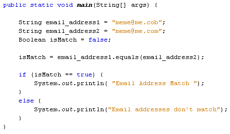

You can check two strings to see if they are the same. For this, use the equals method in Java. Here's some code:

In this code, we want to check if one email address is the same as another. The first two lines set up two string variables, one for each email address. The third line sets up a Boolean variable. That's because the equals method returns a value of true or false. The fourth line is where we use the method:
isMatch = email_address1.equals( email_address2 );
In between the round brackets of the equals method, you place the string you're trying to check. The other string goes before the equals method. Java will then tell you (true or false) whether the two are the same. The IF statement checks which one it is.
The equals method only compares objects, however. It's OK for strings, because they are objects. But you can't use the equals method to compare int variables. For example, this code would get you an error:
int num1 = 12;
int num2 = 13
Boolean isMatch = false;
isMatch = num1.equals(num2);
The int variable is a primitive data type, and not an object. You can turn the primitive int data type into an object, though:
int num1 = 12;
Integer num_1 = new Integer(num1);
Here, the int variable called num1 is being turned into an Integer object. Note the use of the new keyword. In between the round brackets of Integer, you put the primitive int data type you want to convert to an object.
Another useful Java string method is charAt. You'll meet this in the next lesson.